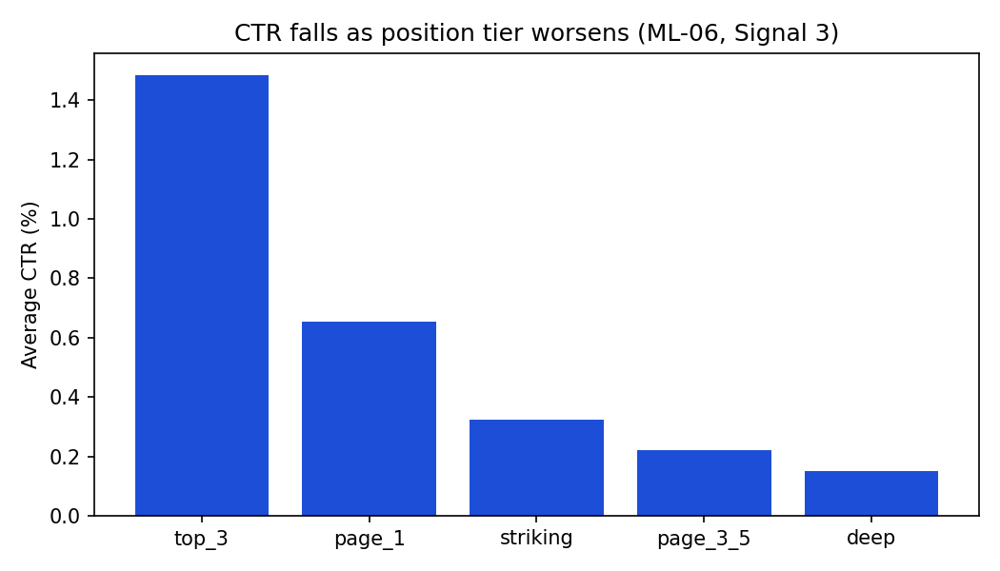
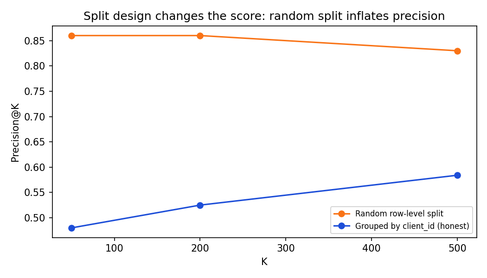
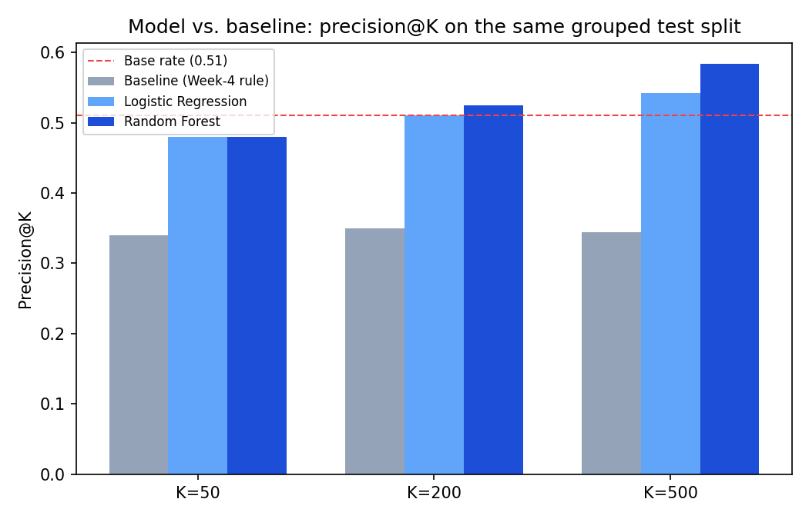

The Problem
A content team can't refresh every page at once. Some pages are quietly losing search visibility; others just look busy. The decision that matters is ordering: which pages should a human look at this week?
This report treats that as a ranking problem, not a classification verdict. The unit of analysis is one page. The output is a ranked queue with a probability, a priority tier, and a plain-language reason — reviewed by a person, never auto-published. A wrong call in either direction is recoverable: reviewing a healthy page wastes time, missing a declining one lets it keep slipping unnoticed. That's exactly the profile where a prioritization tool earns its keep over a hard automated rule.
The Data
30,000 pages, one 90-day trailing performance snapshot: search impressions, clicks,
sessions, engagement, position, plus structural fields (word count, age, freshness) and
keyword economics (search volume, competition, CPC). content_id and
client_id are pseudonymous hashes.
Deliberately excluded: trend_direction and
trend_pct — these define the label used throughout this report, so
they're audited against, never fed in as features. Also excluded: bucketed tier columns
(duplicates of numeric fields already used directly) and production metadata
(provider_used, model_used) that describes how a page was made,
not whether it's declining.
Testing the Assumptions First
Before building anything, I tested the signals a rule would lean on — rather than assuming they held.
Staleness predicts decline
Pages untouched for 91-180 days decline at 61.1% vs 51.1% for pages updated in the last 30 days — directional, not deterministic, and it holds on the two buckets with real sample size (n=9,171 and n=20,480).
"Long content underperforms"
My own early-week hypothesis tested backwards: 3,500+ word pages average 82 sessions vs 2 for sub-1,000-word pages. Word count was dropped from every rule and model built for this report as a direct result — a negative result that saved the work from a false lever.

Method
Baseline
A transparent, unfitted rule: freshness_risk_percentile × visibility_percentile,
built only from days_since_last_update and impressions_90d. No
training, fully readable — the number every model here has to beat, on the exact same
rows, label, and metric.
Model
Logistic Regression, then Random Forest, predicting
is_declining_label = (trend_direction == 'down') — an observed-label
classification problem, scored the same way as the baseline: precision@K.
Validation design
Split by client_id, not by row. Pages from the same client share house style
and audience, so a random split lets a model partly memorize which client this is
instead of learning decline risk. This wasn't a small effect:

Leakage check
Re-adding trend_pct as a feature collapses/inflates the honest AUC of 0.54 to
1.000 — confirming the label-derived columns are the only thing capable of producing a
suspiciously perfect score, and confirming they're fully excluded from the model above.
Results
Same grouped test split, same label, same metric, for all three methods:
| K | Baseline | Logistic Regression | Random Forest |
|---|---|---|---|
| 50 | 0.340 | 0.480 | 0.480 |
| 200 | 0.350 | 0.510 | 0.525 |
| 500 | 0.344 | 0.542 | 0.584 |
Test-set base rate: 0.511 (n=6,163 pages, held out by client).

Where the model is wrong
False positives cluster right on the trend boundary — pages with a trend_pct near ±20%, the cutoff between "down" and "stable," that the model reads as at-risk a step early. False negatives are pages with almost no visibility (1-2 impressions in 90 days) — too little signal for any method to work with. Both error types are explainable, not noise.
Limitations
- No causal claim. This is cross-sectional, observational data. "Declining pages tend to be stale and visible" is an association, not proof that refreshing a page prevents decline.
- Not a search-algorithm model. The label reflects this portfolio's own impression trend, not Google's ranking mechanics.
- Tested on known clients only. The grouped split proves the model generalizes to unseen pages from clients like these — not to a genuinely new client with a different content style.
- Precision, not certainty. 0.48-0.58 precision@K means roughly 4-6 of every 10 flagged pages are genuinely declining — a prioritization signal, not a per-row verdict.
- Feature importance is descriptive, not causal — the same caveat the source research paper applies to its own Random Forest appendix, where the "predictors" turned out to be literal components of the label being predicted.
Recommendations
The full ranked queue lives in the repo at
work/outputs/action_playbook_queue.csv. Every refresh_now row
should clear a short human-review checklist before anyone acts on it: confirm the trend
isn't already improving, confirm the page isn't already scheduled for a redesign, and
confirm the position isn't so deep (50+) that a content refresh alone won't move it. None
of this should be automated past the ranking step — no auto-publishing, no automated
de-indexing or billing decisions from a score alone.
Reproducibility
Every notebook pulls the starter CSV directly from this repo's raw GitHub URL — no local file setup needed. Run in order:
work/notebooks/w03_feature_leakage_check.ipynb work/notebooks/w04_signal_audit.ipynb work/notebooks/w04_baseline_score.ipynb work/notebooks/w05_model.ipynb work/notebooks/w06_validation_audit.ipynb work/notebooks/w07_action_playbook.ipynb work/notebooks/capstone.ipynb
Seed: random_state=42 everywhere a split or model is fit. Environment: see requirements.txt at the repo root.
Acknowledgments & Data Credit
Built as part of an ML internship program. Methodology questions in the full report were developed in dialogue with FlyRank's own "The State of AI-Driven SEO" (March 2026) research paper, whose portfolio-level findings on content age, freshness, and word count this work independently corroborates. Dataset: anonymized/pseudonymized starter export, not FlyRank production data.